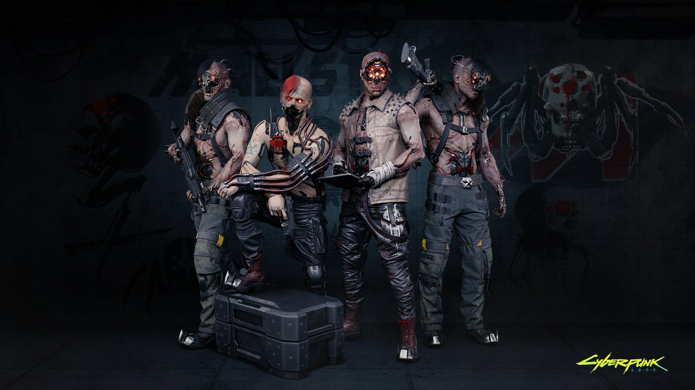
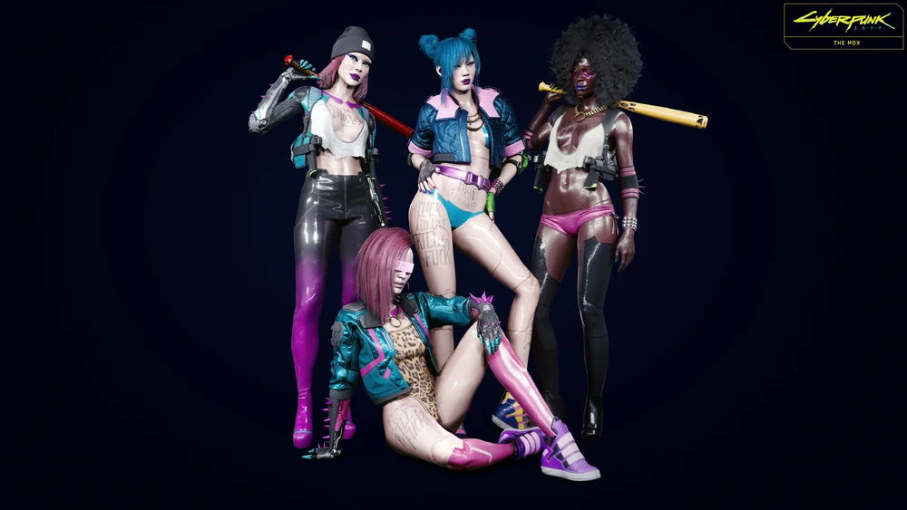
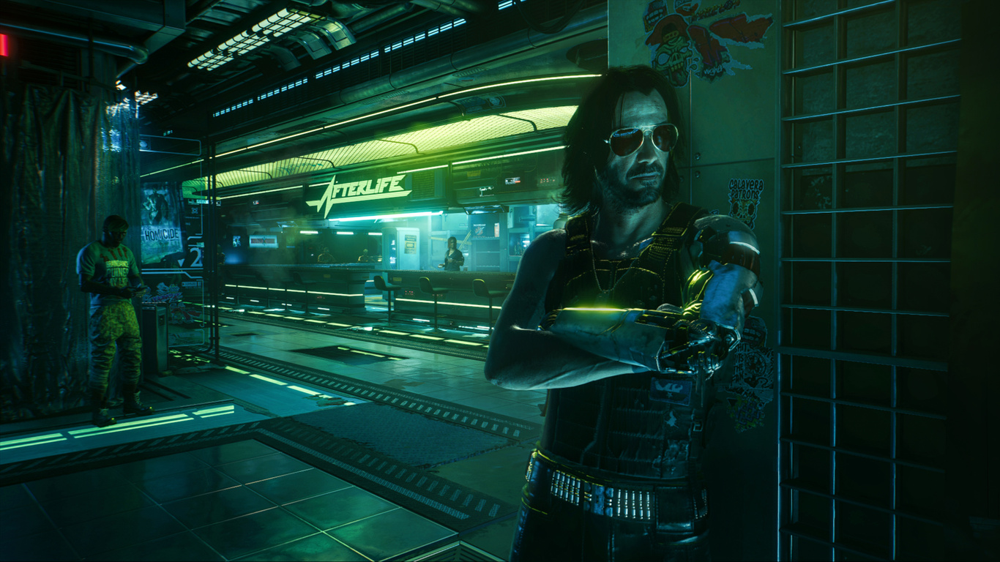
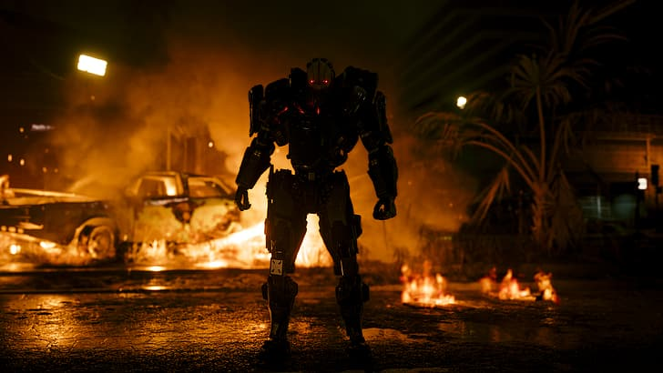
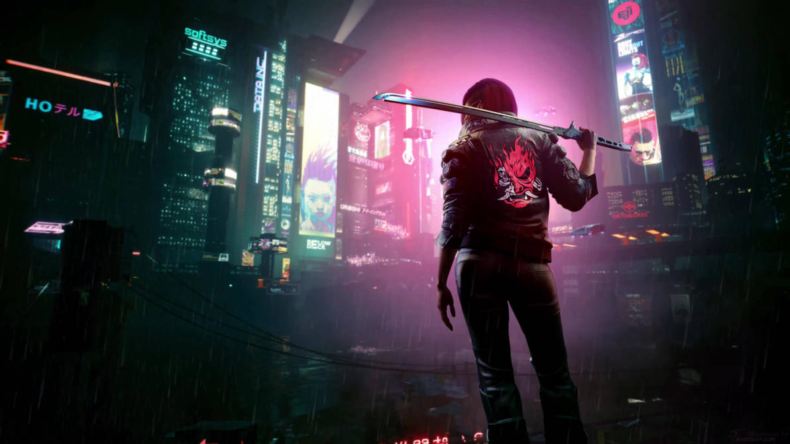

Una Jungla de Asfalto, Cromo y Neón
Night City no es simplemente una aglomeración de torres de concreto y asfalto; es un organismo vivo, salvaje y profundamente corrupto donde cada distrito late al ritmo frenético de los intereses corporativos y la desesperación de las calles. Desde los callejones industriales y oscuros de Watson hasta los lujos obscenos y los rascacielos blindados de Westbrook, la ciudad se divide en esferas de poder implacables. Acá, la arquitectura misma refleja la desigualdad social: los directivos respiran aire purificado en las alturas, mientras que los ciudadanos comunes y los marginados sobreviven abajo bajo una lluvia perpetua de neón y smog.
Bandas y Poderes Locales
Las calles son el peligroso terreno de juego de pandillas hipermodificadas que imponen sus propias leyes brutales a sangre, fuego y plomo:
Maelstrom

Zona de operaciones: Norte de Watson (fábricas abandonadas y guaridas industriales).
Descripción: Una de las pandillas más temidas, inestables y sádicas de toda la megalópolis. Están obsesionados hasta el paroxismo con la modificación corporal quirúrgica sin anestesia, la sustitución masiva de tejido orgánico por hardware militar pesado y los implantes ópticos extremos que les otorgan una mirada completamente deshumanizada y aterradora.
The Moxes

Zona de operaciones: Lizzie's Bar / Kabuki.
Descripción: Un grupo único y resiliente formado por trabajadoras sexuales, anarquistas, punks y marginados de la sociedad urbana. Nacieron originalmente como una fuerza de defensa mutua para proteger a los vulnerables de los abusos constantes de los matones, clientes violentos y bandas rivales, convirtiendo la solidaridad callejera en su estandarte.
Tyger Claws

Zona de operaciones: Japantown (Westbrook).
Descripción: Banda de origen e inspiración tradicional japonesa que controla con mano de hierro gran parte de los distritos de entretenimiento, juego y vicio. Se especializan en el uso letal de katanas modificadas con tecnología térmica, ciberware táctico de sigilo y motocicletas customizadas que rugen bajo los carteles holográficos.
Glosario de Jerga Callejera
Para sobrevivir en la megalópolis, es vital dominar el vocabulario básico del asfalto y la red:
- Cromo (Chrome): Término genérico para referirse a cualquier implante, prótesis o mejora cibernética instalada en el cuerpo.
- Eddies (Eurodólares): La moneda de curso legal impuesta y respaldada por el sistema financiero corporativo global.
- Netrunner: Un hacker especializado en conectar su sistema neural directamente a la Red para infiltrar ICE y robar datos.
- Fixer: Un intermediario, contrabandista y jefe criminal que organiza contratos, armas y trabajos para los mercenarios.
- ICE (Intrusion Countermeasures Electronics): Programas de seguridad defensiva diseñados para freírle el cerebro a cualquier netrunner intruso.
Leyendas de Night City
Los nombres de ciertas figuras resuenan con fuerza reverencial en los callejones más profundos, grabados a fuego en la memoria colectiva ya sea como mitos de la rebelión humana o como aterradoras advertencias corporativas:
Johnny Silverhand

Rol: Rockero, terrorista antisistema y exveterano de las Guerras Corporativas.
Historia: Líder indiscutido de la banda de rock *Samurai*, conocido tanto por sus letras contestatarias que encendieron la chispa de la revuelta como por su profundo y visceral odio hacia las megacorporaciones. Pasó a la historia inmortal de la calle por liderar el devastador atentado contra la Torre Arasaka en 2023, convirtiendo su memoria en un símbolo eterno de que los gigantes de cristal pueden romperse.
Adam Smasher

Rol: Sicario de élite, monstruo corporativo y guardaespaldas personal de Arasaka.
Historia: Un humano al que prácticamente no le queda carne; una auténtica máquina de matar sociópata construida casi en su totalidad con ciberware militar de grado pesado. Carece de empatía y humanidad, siendo el terror silencioso que asusta a cualquier mercenario con dos dedos de frente cuando escucha su nombre en un contrato.
V (El Edgerunner / La Leyenda de Afterlife)

Rol: Mercenario / Edgerunner de alquiler independiente.
Historia: El audaz mercenario que desafió los límites impuestos por los peces gordo de la megalópolis. Famoso en toda la red por sobrevivir al infame Golpe a Arasaka, lidiar con los estragos letales del Biochip Relic en su mente y ganarse a puro pulso un asiento dorado y eterno en la barra del bar Afterlife.